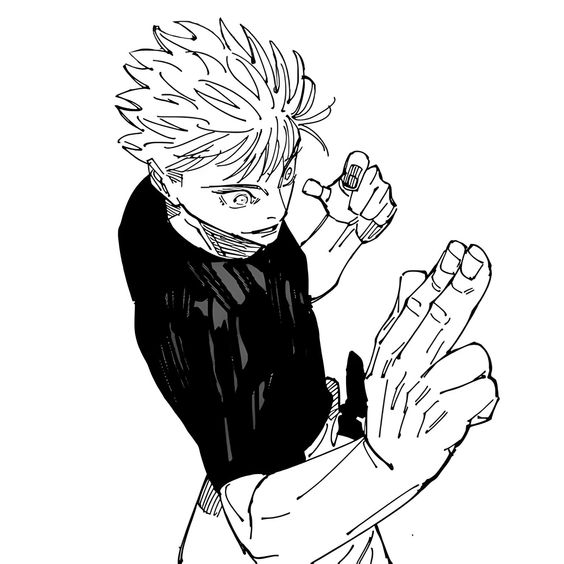

|  |
O personagem Satoru Gojo, do anime jujutsu kaisen, teve o seu fim no capítulo 236 do mangá, morto por Ryomei Sukuna, com ajuda
de Mahoraga.
Os fãs não se sentem satisfeitos com a morte injusta do personagem, e muitos especulam que o mesmo ainda voltará nos capítulos seguintes.
Apesar de tudo isso, não foi confirmado por Gege Akutami, o criador do mangá, a possível volta do seu personagem Satoru Gojo.
Tudo o que sabemos é q o mangá acabará
em algum momento desse ano e
que o criador do mangá, definitivamente, ama Ryomei Sukuna. |